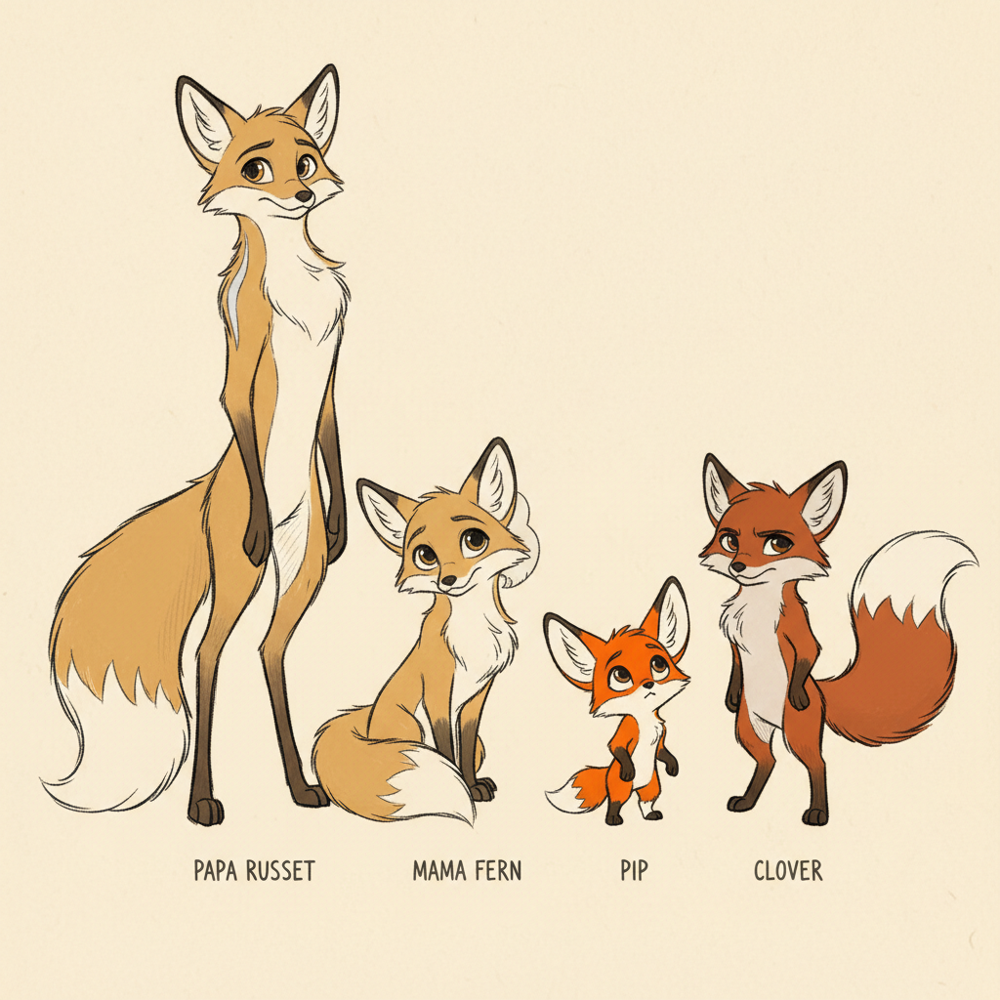
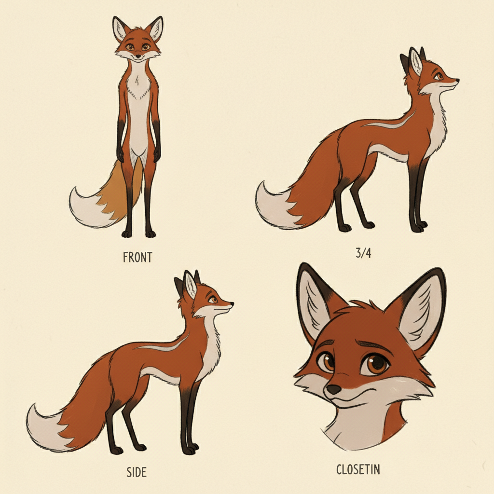
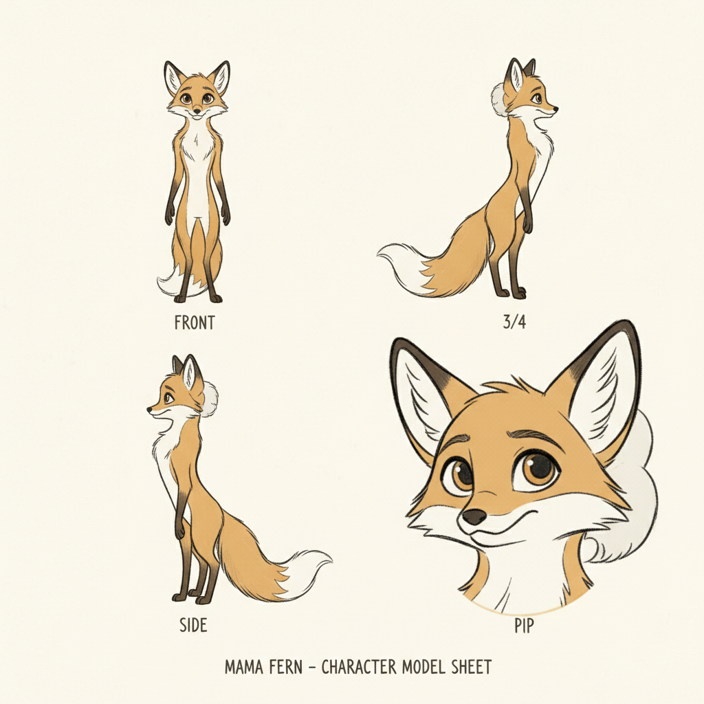
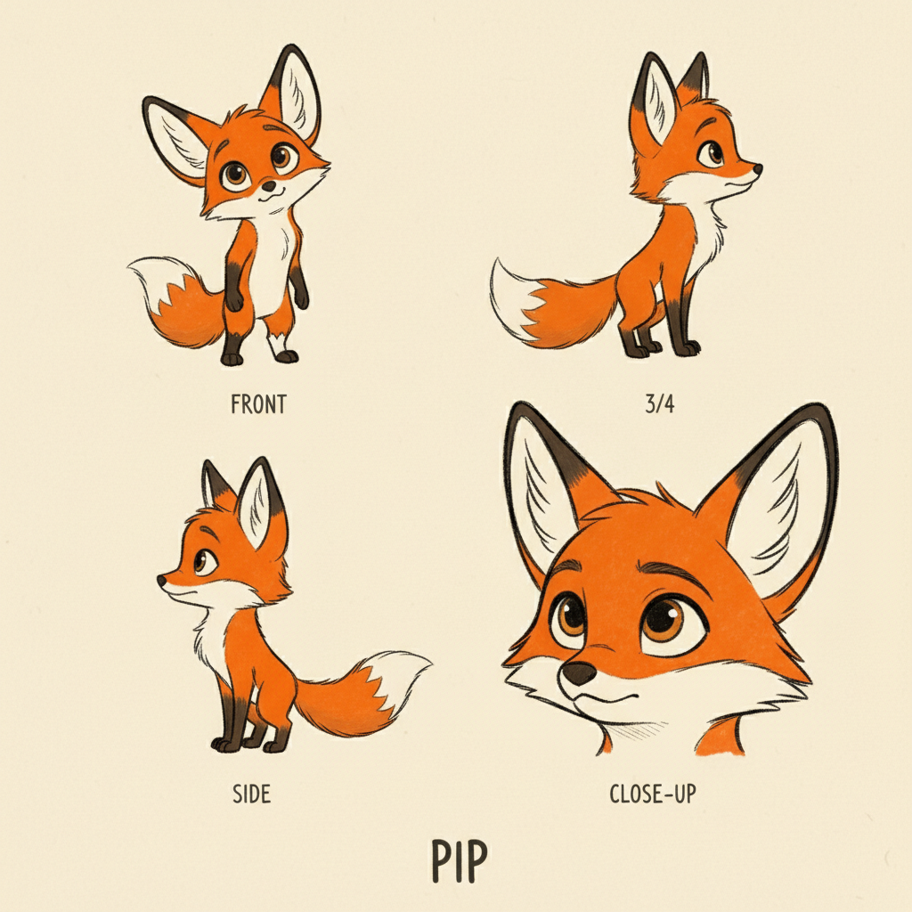
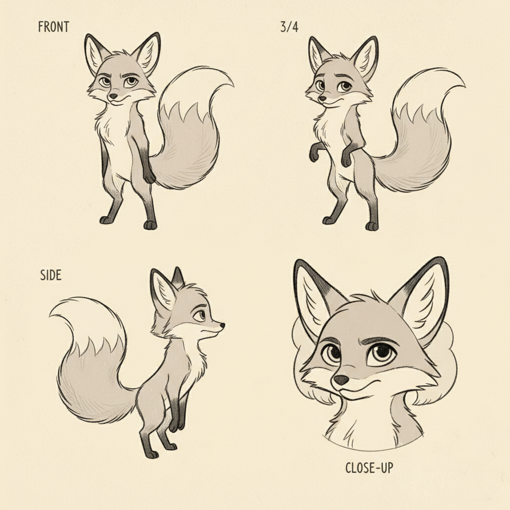
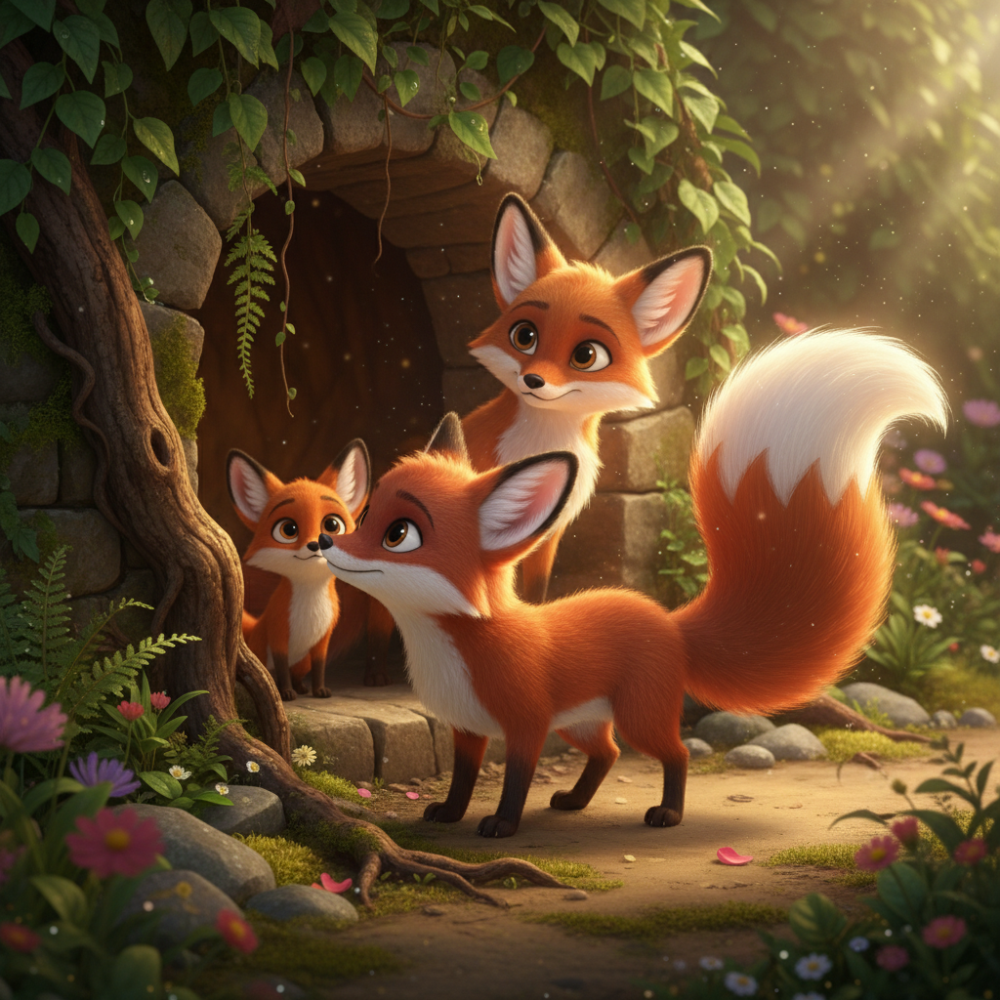
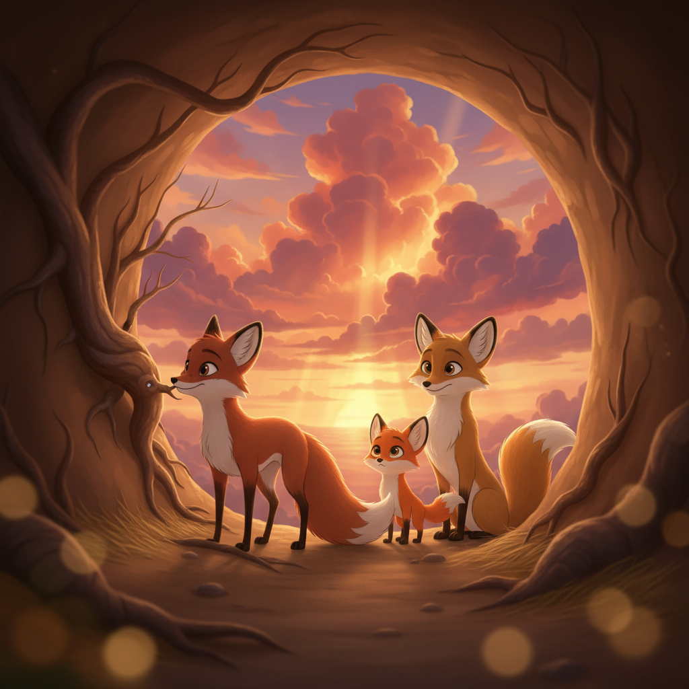
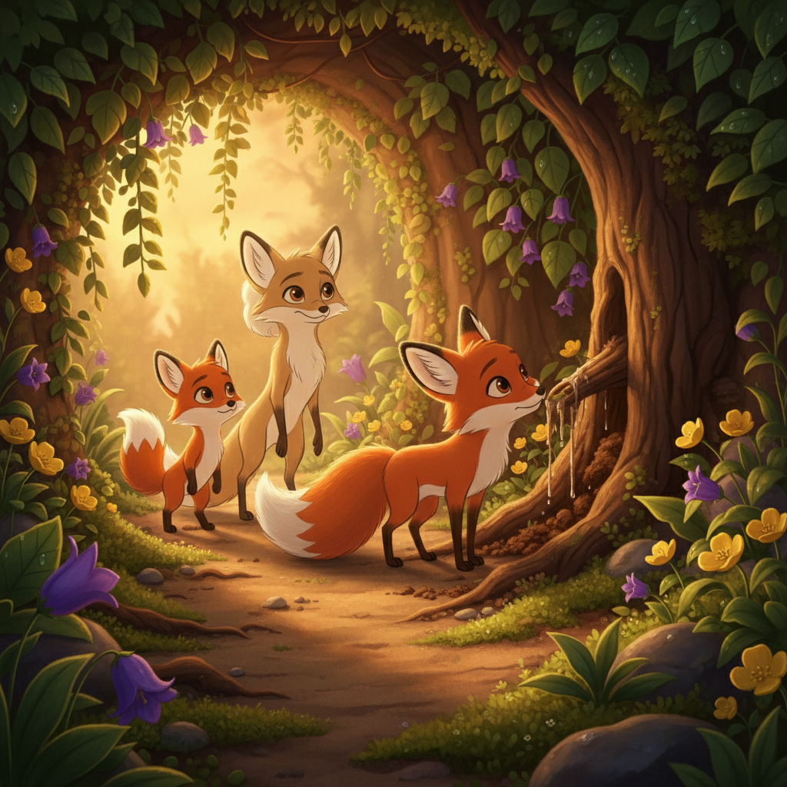
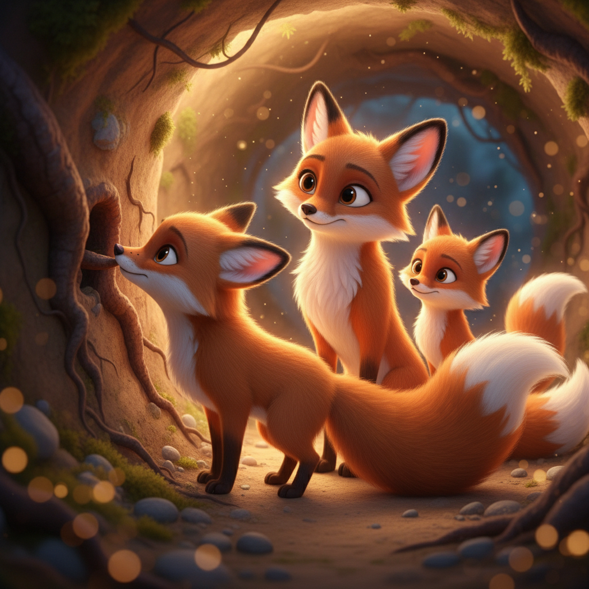
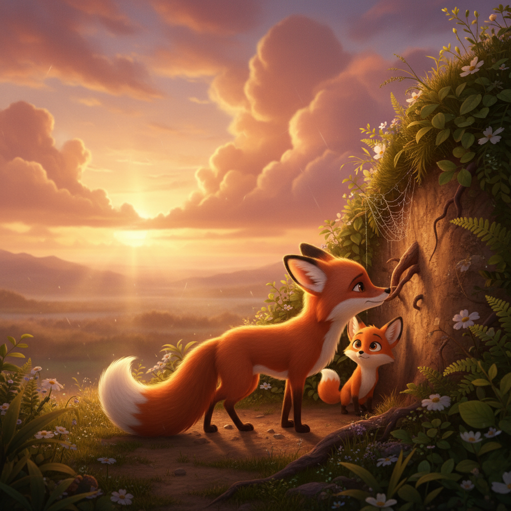

Red Foxes: A Den Full of Love
Follow Pip the red fox kit through his first autumn, from opening his eyes in the cozy den to learning to pounce, play, and curl up with his family under the stars
Preface
Welcome to the golden autumn woodland, where a family of red foxes lives in a cozy underground den beneath an old oak tree! In this adventure, we'll follow Pip, an adorable little kit with oversized ears and one white sock, as he discovers the magic of the meadow with his family.
Red foxes are some of the cleverest animals in nature. Papa hunts with an incredible pounce-dive, Mama knows every berry and safe path in the forest, and the kits learn everything through play. Both parents work together to teach their babies about the wonderful world above their den.
Through Pip's first autumn, you'll discover how foxes hear mice under the snow, how they bury food in hundreds of hiding spots, how their bushy tails keep them warm like blankets, and how their eyes glow in the dark. Get ready for a cozy adventure in the autumn leaves!
Art Direction
Pre-Production Pipeline
Step 0: Storyline
pending (0 attempts)
pendingStep 1: Unified Cast Sheet
approved (1 attempts)
ApprovedStep 2: Character Sheets
approved
Papa Russet: approvedMama Fern: approved
Pip: approved
Clover: approved
Step 3: Mood Proposals
approved
Moods: translucency, lush-botanicalStep 1: Unified Cast Sheets

approved.jpg (APPROVED) unified-cast-v1.jpg
unified-cast-v1.jpg
Step 2: Papa Russet Sheets
 approved.jpg (APPROVED)
approved.jpg (APPROVED)

sheet-v1.jpgStep 2: Mama Fern Sheets
 approved.jpg (APPROVED)
approved.jpg (APPROVED)

sheet-v1.jpgStep 2: Pip Sheets

approved.jpg (APPROVED) sheet-v1.jpg
sheet-v1.jpg
Step 2: Clover Sheets

approved.jpg (APPROVED) sheet-v1.jpg
sheet-v1.jpg
Step 3: Pixar Mood Proposals
 APPROVED
APPROVED

1-translucency-botanical
2-epic-intimate
3-golden-botanical
4-translucency-intimate
5-epic-goldenCharacter Cast
Papa Russet
Tall handsome dog fox with deep rich russet coat, dramatic silver streak along his back, long elegant black legs, magnificent bushy tail, warm amber eyes
No portraitMama Fern
Graceful vixen with softer golden-orange coat, beautiful cream chest, gentle warm brown eyes, distinctive pale patch behind one ear
No portraitPip
Smallest kit with brightest vivid orange fur, oversized perky ears, one distinctive white sock on front left paw, curious tilted-head pose
pip-opens-eyes.jpgClover
Slightly larger kit with darker reddish-auburn coat, extra-large white tail tip, tiny dark freckle on nose, notably bushy tail for her age
clover-portrait.jpgScene Plan (12 scenes)
Meet Papa Russet
Papa Russet is the handsomest fox in the whole autumn woodland! He stands tall and proud in the misty dawn meadow, his deep rich russet coat glowing like fire in the golden light. A dramatic silver streak runs along his back like a bolt of lightning, and his long elegant black legs carry him silently through the grass. His magnificent bushy tail swishes behind him as he listens, ears turning this way and that. 'The meadow is waking up,' he whispers, his warm amber eyes sparkling. 'And somewhere under this grass, breakfast is hiding.'
Meet Mama Fern
Deep underground, in the cosiest den you can imagine, Mama Fern is curled up like a golden-orange crescent moon. The walls are smooth earth, lined with soft moss and dry leaves she gathered herself. Mama's coat is softer and lighter than Papa's — a beautiful golden-orange that seems to glow in the dim light. Her cream-coloured chest rises and falls gently, and her warm brown eyes watch over two tiny bundles of fur nestled against her belly. 'Sleep well, my little ones,' she murmurs, her distinctive pale patch behind one ear catching the faintest light from the den entrance. 'Tomorrow, you'll see the world.'
Hello, World!
One morning, the smallest kit opens his eyes for the very first time. The world is blurry and dim, but oh — how WONDERFUL it smells! Earth and moss and Mama's warm fur. Little Pip blinks his bright eyes and tilts his head sideways, his oversized ears perking up at every tiny sound. He wiggles his paws — three black ones and one special white sock on his front left paw. 'Mama?' he squeaks. Mama Fern nuzzles him gently. 'Hello, my brave little Pip. You have the most curious eyes I've ever seen.' And she's right — Pip wants to see EVERYTHING.
Meet Clover, the Clever One
Pip isn't alone! His sister Clover is already awake and exploring. She's a bit bigger than Pip, with a darker reddish-auburn coat and the bushiest tail you've ever seen on a kit. There's a tiny dark freckle right on her nose that wiggles when she sniffs. And she sniffs EVERYTHING. Right now she's figured out that a root poking through the den wall leads UP — to the outside world. 'I bet I can dig around it,' Clover announces, already pawing at the earth. 'Clover, darling,' Mama sighs with a smile. 'The door is right over there.' But that's Clover — she always finds her own way.
The Great Big World!
Today is the day! Papa appears at the den entrance, his silver-streaked back silhouetted against a blaze of golden light. 'Come on, little ones. It's time to see your meadow.' Pip and Clover scramble up the tunnel and — GASP! The world is ENORMOUS! There's a sky that goes on forever, painted in soft pinks and golds. There are trees taller than a thousand dens stacked on top of each other. There are leaves raining down like golden coins. Pip sits down with a thump, head tilted way back, mouth wide open. 'Papa,' he whispers. 'Is all of this... OURS?' Papa smiles. 'Every last leaf.'
Papa's Amazing Pounce!
Papa has something INCREDIBLE to show the kits. He stands very still in the tall grass, head tilted, one ear turned forward and one turned sideways. 'Shhhh,' he whispers. 'Listen.' The kits freeze. Then Papa does the most AMAZING thing — he leaps HIGH into the air, arching his whole body like a rainbow, and DIVES nose-first straight down into the grass! POUNCE! He pops back up with a proud grin. 'That, my dears, is the fox pounce. We listen for mice under the grass, and then — we fly!' Pip's eyes are as round as the moon. 'I want to FLY!'
Clover's Wobbly Pounce
Clover watches Papa carefully — head tilt, ear turn, and... POUNCE! Well, sort of. Her first try is more of a wobbly belly-flop into a pile of leaves — FWUMP! But Clover is determined. She tries again. And again. On her fifth try, she launches herself into the air, arches her back just like Papa, and — catches a falling leaf right between her paws! 'I CAUGHT SOMETHING!' she shouts, holding up the golden leaf triumphantly. Papa beams with pride. 'A perfect pounce! Next time, that leaf will be a mouse.' Pip claps his paws together. 'My turn! My turn!'
Mama's Meadow Lessons
While Papa teaches pouncing, Mama teaches everything else! She leads the kits along the stream, showing them which berries are sweet and safe. 'Blackberries — yummy!' she says, plucking one for each kit. 'But those red ones? Never touch.' She shows them where the frogs hide, where the best mushrooms grow, and how to drink from the stream without getting your nose too wet. Pip sticks his whole face in the water — SPLUTTER! Clover drinks daintily and shakes her head. 'You have to be GENTLE, Pip.' But Pip doesn't mind. The water tastes like adventure.
Wild Fox Games!
When fox kits play, they play with their WHOLE hearts! Pip and Clover race through piles of golden leaves, sending them flying like fireworks. They wrestle — Clover pins Pip down, but he wiggles free and grabs her tail. They chase each other in circles until they're dizzy, then collapse in a giggling heap. Pip leaps OVER Clover. Clover leaps over a log. Pip tries to leap over the log AND Clover — and lands right on top of her! 'OOOF!' But they're both laughing too hard to care. This is what it means to be a fox kit in autumn.
Can You See Us?
Mama teaches the kits the most important fox trick of all — how to disappear! 'Lie very still in the leaves,' she whispers. 'Your fur is the same colour as autumn.' Pip and Clover dive into a pile of fallen leaves and hold perfectly still. And — MAGIC! Their orange and auburn fur blends so perfectly with the golden leaves that they completely vanish! Only their bright eyes peek out. 'I can't see you anywhere!' Papa calls out, pretending to search. The kits giggle silently, leaves trembling. 'Nature gave foxes the best disguise,' Mama says proudly. 'The whole forest is your hiding spot.'
Golden Hour
As the sun sinks low, the whole meadow turns to liquid gold. This is the foxes' favourite time — the golden hour, when the light makes everything look like a painting. Papa chases Pip through the tall grass while Mama and Clover play tug with a stick. The kits' fur blazes like little flames in the amber light. Long shadows stretch across the meadow like gentle giants. Pip stops and looks around at his family — Papa with his silver streak glowing, Mama with her cream chest catching the last warm rays, Clover with her bushy tail streaming behind her like a banner. 'This is the best day,' Pip thinks. But tomorrow will be the best day too.
Papa's Tail Blanket
Night falls softly over the meadow, and a thousand stars appear like tiny candles in the sky. The fox family curls up together at the entrance of their den, under the old oak tree. Papa wraps his big magnificent tail around both kits like the warmest, softest blanket in the world. Mama nestles close, her gentle brown eyes already heavy with sleep. Pip burrows deeper into the warm fur. He can hear Papa's heartbeat — steady and strong. He can feel Clover's breathing — slow and peaceful. He can smell the earth, the leaves, the night. 'Papa?' Pip whispers. 'Are the stars our night-lights?' 'Yes,' Papa murmurs. 'Every single one.' And wrapped in love and starlight and the warmth of Papa's tail, the little fox family drifts off to sleep.
Viewer Details
Ear Close-up
Look at Papa Russet's amazing ears — they can rotate independently, like two radar dishes! One ear can point forward while the other turns sideways or even backward. This lets foxes pinpoint the exact location of sounds, even tiny mice rustling under leaves or snow. The ears are lined with thick fur to keep warm, and the dark tips help foxes recognize each other. A fox's hearing is so precise it can detect the direction of a sound within one degree!
Paw Pads
Fox paws are perfectly designed for sneaking! Their paw pads are covered in thick fur — even on the bottom — which muffles their footsteps like built-in slippers. Unlike most dogs, foxes have semi-retractable claws that they can pull in slightly for silent stalking and extend for digging dens. Look at Pip's special white sock on his front left paw — underneath, his paw pads are just as dark and tough as his black paws!
Whisker Sensors
Mama Fern's long whiskers aren't just for looks — they're incredibly sensitive touch sensors! Each whisker is connected to hundreds of nerve endings that can detect the tiniest changes in air currents. This helps foxes navigate in complete darkness inside their dens and through thick undergrowth at night. The whiskers are as wide as the fox's body, helping them judge whether they can fit through tight spaces. They can even sense the body heat of nearby prey!
The Magnificent Brush
Papa Russet's tail — called a 'brush' by fox lovers — is a marvel of nature! It makes up about one-third of his total body length and is packed with thick, insulating fur. The white tip at the end helps fox family members follow each other through tall grass and dim light. Inside the tail, a scent gland produces the musky 'foxy' smell that foxes use to mark their territory. Kits love to chase their parents' tails — it's their favourite toy!
Fun Facts
Super Hearing
Red foxes can hear a mouse squeaking from 100 feet away, and can even hear them tunnelling under 3 feet of snow! Their large ears can rotate independently — one ear forward and one sideways — like two satellite dishes scanning for sound. This super hearing is what makes their famous pounce-dive so accurate. They can pinpoint exactly where a mouse is hiding, even when they can't see it!
The Fox Trot
When a fox finds extra food, it doesn't just eat it all — it buries it for later! Foxes dig small holes, drop in a mouse or some berries, and cover it back up with their nose. The amazing part? A single fox can remember HUNDREDS of hiding spots! They use landmarks like trees, rocks, and streams to create a mental treasure map. Some foxes have been found with over 1,000 cached food items!
Tail Warmth
A fox's bushy tail — called a 'brush' — is the ultimate multi-tool! In cold weather, foxes wrap their tail over their nose and paws like a cozy blanket. In rain, it works like an umbrella. When running, it helps with balance like a tightrope walker's pole. Foxes even use their tails to communicate — a wagging tail means 'let's play,' and a puffed-up tail means 'stay away!' Baby foxes love sleeping wrapped in their parents' tails.
Night Vision
Fox eyes have a special mirror-like layer behind the retina called the tapetum lucidum — which means 'bright carpet' in Latin! This layer bounces light back through the eye a second time, giving foxes incredible night vision. It's also what makes their eyes glow bright greenish-gold when caught in a flashlight beam at night. Foxes can see in light levels six times lower than what humans need. They're nature's night ninjas!
Hidden Generation Sections
Using the fox from reference, extreme close-up of a red fox's large pointed ears showing the independent rotation abilit...
Ref: meet-papaUsing the fox kit from reference, close-up of a red fox's paw showing the semi-retractable claws and furry paw pads, one...
Ref: pip-opens-eyesUsing the vixen from reference, close-up of a red fox's face focusing on the long sensitive whiskers fanning out from th...
Ref: meet-mamaUsing the fox from reference, detailed view of a red fox's magnificent bushy tail showing the thick fur layers and white...
Ref: meet-papaUsing the fox kit from reference, show a fox with ears perked up independently rotating, sound waves illustrated coming ...
Ref: pip-opens-eyesUsing the fox from reference, show a fox carefully burying food in the ground with its nose, small cache holes visible a...
Ref: meet-papaUsing the fox from reference, show a fox curled up with its bushy tail wrapped over its nose and paws like a blanket, co...
Ref: meet-papaA red fox's face in the dark with eyes glowing bright greenish-gold from the reflective tapetum lucidum, mysterious nigh...